6a: Color
Color
- Perception: How the eye perceives color
- Specification: How we specify color
- Use: Use of color in visualizations
Visible electromagenetic spectrum
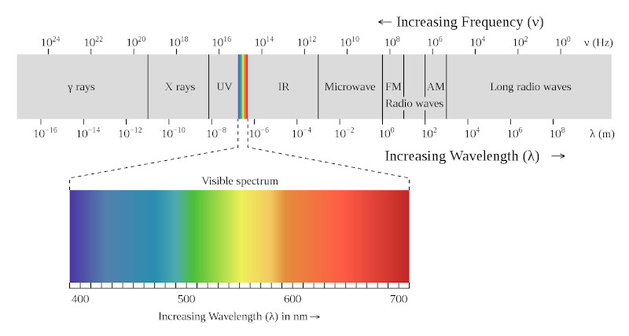Visible light is roughly in the wavelengths of 400nm (4 x 10-7m) to 700nm (7 x 10-7m).
Eye Structure

Eye: Rods and Cones
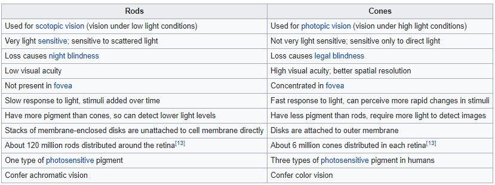
More detail on the fovea
Cones: photoreceptor wavelength
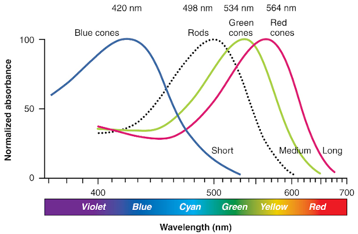Red cones, or L-cones. 64% of total cones, maximally sensitive to long-wave light
Green cones, or M-cones. 32% of total cones, maximally sensitive to medium-wave light
Blue cones, or S-cones. 2 – 7% of total cones, maximally sensitive to short-wave light
Cones: distribution

Left: Illustration of distribution of cones in fovea of human with normal color vision.
Right: Illustration of distribution of cones in fovea of human with protanopic vision, i.e. no L-cones (red cones)
What color does the human eye see the most?
Color blindness 1
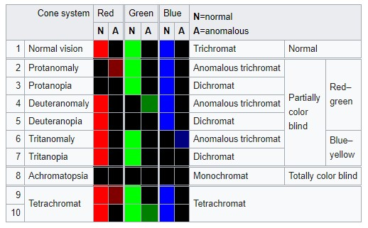Color blindness is genetically inherited. About 8% men (esp. northwestern European descent), 0.5% women around the world
Red-green color blindness is passed down on the X chromosome, of which men have only 1 X chromosome (women have 2).
Color blindness 2
Common: red-green deficiency (deuteronomaly 6% of males). Less common: protonomaly (2 % of males).
Rare: blue-yellow deficiency, tritanomaly (<0.01%).
More info on color blindness
Video: What causes color blindness?
Color blindness 2
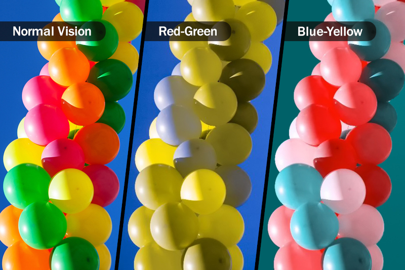Vischeck: color blindness simulation and correction
Colorspace
A colorspace is a system for describing color numerically.
- RGB
- CMYK
- HSV/HSL
- CIE Lab
- CIE HCL
There are many more: XYZ, Munsell, CMS, etc.
Reading: List of color spaces
Colorspace: RGB
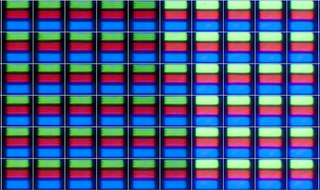 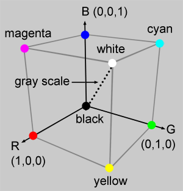Left: Magnification of pixels on a screen. Right: RGB color cube.
RGB colorspace is additive (i.e. more colors added, the lighter it is).
Problems: Not perceptually uniform.
Chromaticity and Color Gamut
Video: CIE 1931 Chromaticity Diagram
Video: Color Gamuts
Reading: Standard RGB (sRGB) and chromaticity
CIE (Commission internationale de l'éclairage, or International Commission on Illumination) - international authority on light, illumination, colour, and colour spaces.
Colorspace: CMYK
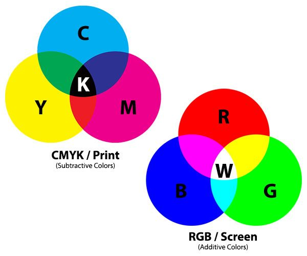CMYK colorspace is subtractive (i.e. more colors added the darker it is).
CMY is lighter than RGB. Typically for print only.
Reading: Why printing uses CMYK
Colorspace: HSV/HSL
H = Hue, S = Saturation (vividness of color), V/L = Value / Lightness
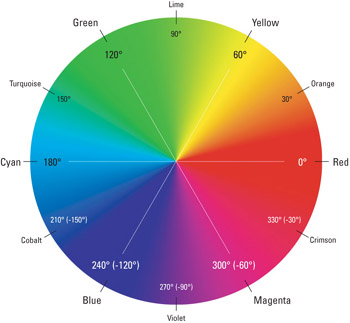 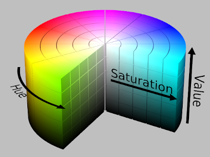Left: Hue described radially. Right: HSV color cylinder
Problems: More intuitive, but also not perceptually uniform.
Colorspace: CIE Lab (or Lab)
L = Lightness, a = red-green scale, b = yellow-blue scale
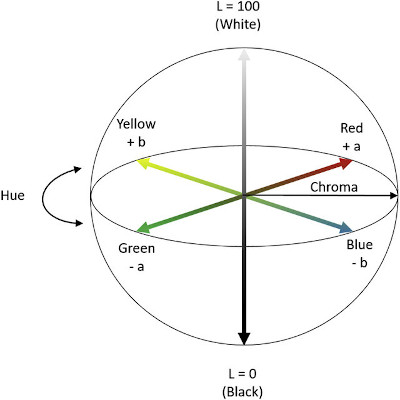CIE (Commission internationale de l'éclairage, or International Commission on Illumination) - international authority on light, illumination, colour, and colour spaces.
Designed to better approximate human perception of color.
Perceptually linear (or close).
Colorspace: CIE HCL (or HCL)
H = Hue, C = Chroma, L = Luminance
H and C are transformations of a and b in the Lab model.
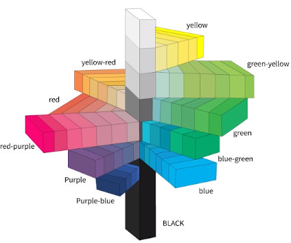 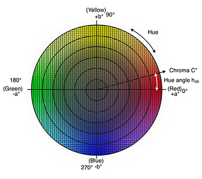Perceptually linear, and more intuitive.
Colorspace comparison
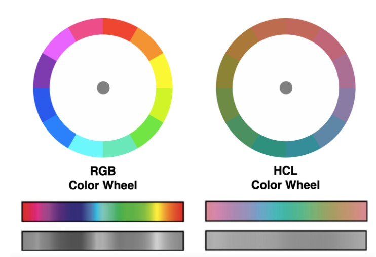Recap: Color channels
Magnitude channel (quantitative) or identity (qualitative)?
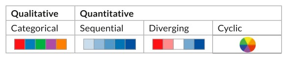 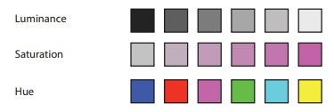4th channel: Transparency (used as layer for interaction)
Viridis color palette
Recap: color blindness
- Colorful (spans wide palette)
- Perceptually uniform
- Robust to color blindness
- Pretty!
Reading: "Perceptually uniform?" D3 color scales
Reading: 5 tips on designing colorblind-friendly visualizations
Redundantly encode channels - shape, tooltip, etc.
Color Tools
Recap: Channel effectiveness: Discriminability.
Not too many color bins. Perceptually distinct colors.
ColorBrewer.org: An Online Tool for Selecting Colour Schemes for Maps
Color: Channel Implications
Channel: separability - luminance and saturation are not the most separable. Also not separable from transparency. For separability, pick hue vs saturation / luminance.
Channel: salience (popout) - small number of bins.
Rainbow color maps: Pros and cons
Reading: Choosing colors for your visualization
Reading: Using color in Information Display Graphics (NASA color usage research lab)
Color: Contrast
Color is perceived differently depending on how it is contrasted with other colors. It is relative and not absolute.
Bezold Effect and White's Illusion
Reading: Luminance contrast
Reading: Simultaneous and successive contrast
Color Theory
Color theory is the collection of rules and guidelines which designers use to communicate with users through appealing color schemes in visual interfaces.
Questions?
Chi-Loong | V/R